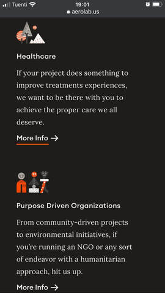

PROXIMITY
Aerolab
Aerolab site
In this picture we can observe two blocks, one we will call it
"Healthcare" and the other we will call it "Purpose".
In both
blocks we have the same items: a representative icon, a title for
the block, a paragraph and a "more info" button, dispite we have the
same structure we can clearly distinguish two different blocks. We
can see it in this way because they applied to their design a
proximity law between items.
ALIGNMENT
The Craftsmen
The Craftsmen siteIn this picture we have 3 elements by block, an icon, a title and a paragraph. All the icons are aligned, the titles and the paragraphs are aligneds too. This a clearly example of this rule
REPETITION
Archiee
Archiee siteIn this image we can see three blocks. All of them are repeated to encapsulate a section of the web page and thus use the law of repetition to display that section. The other sections repeat the layout in a different way, also using the repetition resource.